FFII Pixel Remaster world layers · comparison V1
Pixel Remaster reference crops, the supplied current game capture labeled BEFORE ocean fix, and generated OpeningWorldV1 candidates. The generated candidates are AI-Art assets only and have not been integrated into the game.
Evidence limit: the current screenshot predates the ocean fix and the current renderer binding is frozen/unbuilt. Do not treat its ocean, coast, or settlement visibility as a post-fix runtime result. The Gatrea-to-Fynn 06 source is a black frame and excluded from visual comparisons. Candidate asset thumbnails below do not establish runtime fidelity.
Annotated crop contact sheet
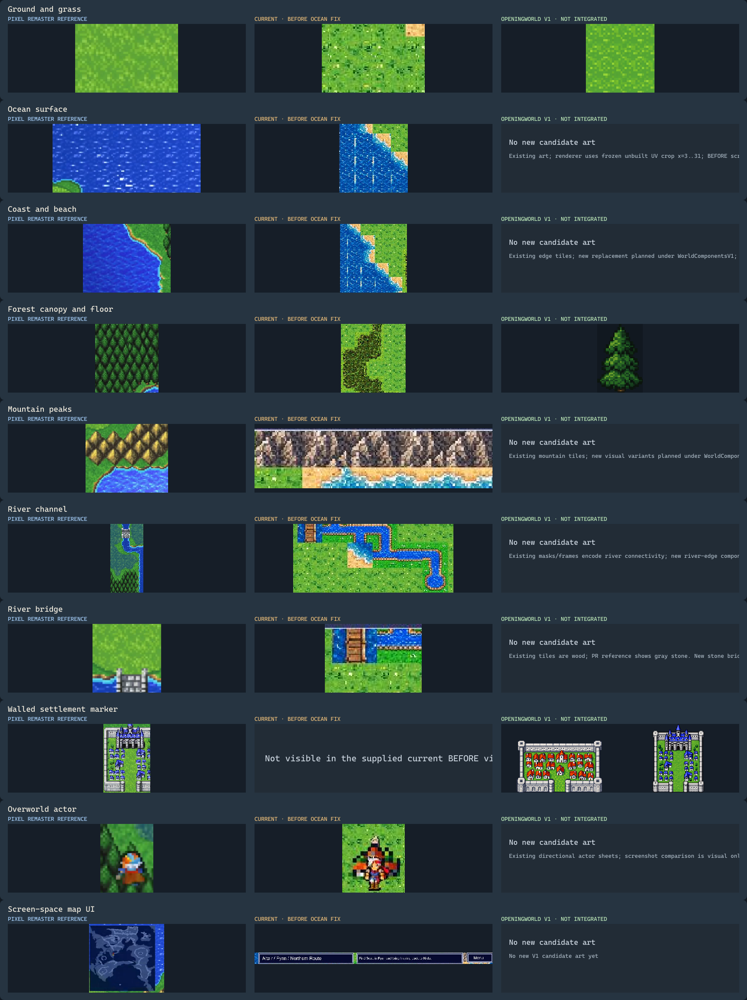
Current OpeningWorldV1 candidate sheet
Open the four new world art candidates · shown separately here against the reference and BEFORE capture.
Source provenance
Ground and grass
Pixel Remaster crop · source-frames/pr-altair-to-gatrea-02.png · x=200, y=130, 90×60Current BEFORE crop · x=540, y=225, 90×60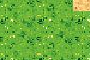
Candidate · grass.png · not integrated
Generated OpeningWorldV1 candidate; not game-integrated.
Existing/frozen asset paths
None recorded. PR grass has fine, dense pixel texture and broad value/color patches. The BEFORE map ground is brighter, with isolated high-frequency speckle. Compare fill texture and value grouping; the source frames use different zooms and cannot establish exact colors.
Recommended stable asset contract
world-ground-grassland-center-32 · ground/base
Size: 32x32 tile; 4 seamless edges
Edge ports / anchors: repeat north/east/south/west
Gap: Candidate OpeningWorldV1 grass is available at 32x32 with repeat ports on all edges; compare it to PR texture. It is not integrated into the game.
Ocean surface
Pixel Remaster crop · source-frames/pr-altair-to-gatrea-02.png · x=205, y=0, 205×95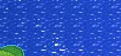
Current BEFORE crop · x=5, y=140, 145×145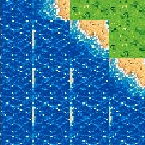
No generated OpeningWorldV1 art for this layer yet. Existing assets and pending replacements are listed below.
Existing art; renderer uses frozen unbuilt UV crop x=3..31; BEFORE screenshot predates it.
Existing/frozen asset paths
Assets/Art/Production/RemasterExpansion/tiles/coast/deepwater-01.png
Assets/Art/Production/RemasterExpansion/tiles/coast/deepwater-02.png
Assets/Art/Production/RemasterExpansion/tiles/coast/deepwater-03.png PR water reads as continuous blue animated surface with fine light ripples. The supplied current capture is explicitly BEFORE the ocean fix and shows a strong regular grid/streak pattern; it is only a baseline, not evidence about the post-fix build.
Recommended stable asset contract
world-water-ocean-32x32-4f · water/surface
Size: 32x32 tile, four-frame loop (128x32 strip or four 32x32 files)
Edge ports / anchors: seamless repeat north/east/south/west; phase-compatible neighboring tiles
Gap: Recompare against a post-fix native screenshot before changing water art.
Coast and beach
Pixel Remaster crop · source-frames/pr-altair-to-gatrea-01.png · x=0, y=80, 160×125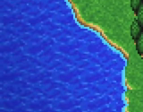
Current BEFORE crop · x=95, y=205, 185×190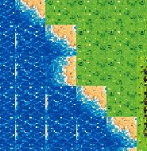
No generated OpeningWorldV1 art for this layer yet. Existing assets and pending replacements are listed below.
Existing edge tiles; new replacement planned under WorldComponentsV1; no native post-fix QA yet.
Existing/frozen asset paths
Assets/Art/Production/RemasterExpansion/tiles/coast/shore-n.png
Assets/Art/Production/RemasterExpansion/tiles/coast/shore-e.png
Assets/Art/Production/RemasterExpansion/tiles/coast/shore-s.png
Assets/Art/Production/RemasterExpansion/tiles/coast/shore-w.png PR beaches form a very narrow, irregular tan fringe along the waterline. The BEFORE map has broad, blocky sandy steps. Keep the land silhouette as authored geography and add a thin edge/foam treatment without expanding land.
Recommended stable asset contract
OpeningWorldV1 coast edge band · water base + shore-edge overlay
Size: 32x32 tile with a 20% shore-edge band
Edge ports / anchors: land/water edge orientation is carried separately; shoreline edge band is transparent over the water base
Gap: Eight directional existing shore tiles are available, while new coast art is planned under WorldComponentsV1. The active/unbuilt world contract uses water base plus a 20% shore-edge band; compare only after native QA.
Forest canopy and floor
Pixel Remaster crop · source-frames/pr-altair-to-gatrea-03.png · x=350, y=160, 120×130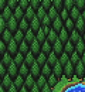
Current BEFORE crop · x=270, y=215, 170×180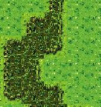
Candidate · conifer.png · not integrated
Generated OpeningWorldV1 candidate; two staggered conifers per logical cell is a renderer contract; not game-integrated.
Existing/frozen asset paths
None recorded. PR forests are packed, separate dark conifers with pointed crowns and visible gaps between trees; forest floor remains a distinct green layer. The BEFORE map reads as a single mottled hedge mass.
Recommended stable asset contract
OpeningWorldV1 conifer 32x48 + forest hedge canopy · forest-floor + two staggered conifer sprites per logical cell; town hedge canopy is separate
Size: conifer 32x48; grass/forest floor 32x32
Edge ports / anchors: conifer sprites are transparent overlays; floor repeats; town hedge has its own edge/turn ports
Gap: Candidate conifer and renderer contract are available in OpeningWorldV1; test two staggered trees per logical cell against PR density. Art is not integrated into the game.
Mountain peaks
Pixel Remaster crop · source-frames/pr-altair-to-gatrea-02.png · x=475, y=168, 150×125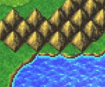
Current BEFORE crop · x=690, y=90, 190×48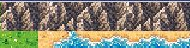
No generated OpeningWorldV1 art for this layer yet. Existing assets and pending replacements are listed below.
Existing mountain tiles; new visual variants planned under WorldComponentsV1; supplied BEFORE crop is too narrow for a full visual audit.
Existing/frozen asset paths
Assets/Art/Production/RemasterExpansion/tiles/overworld/mountain-01.png
Assets/Art/Production/RemasterExpansion/tiles/overworld/mountain-02.png
Assets/Art/Production/RemasterExpansion/tiles/overworld/mountain-03.png
Assets/Art/Production/RemasterExpansion/tiles/overworld/mountain-04.png PR mountains use repeated triangular peaks with crisp light-facing facets and dark separations. Only a narrow, partly UI-adjacent mountain strip is visible in the current BEFORE capture, so its full mountain treatment is not established.
Recommended stable asset contract
world-mountain-peak-32 · terrain/mountain + edge-shadow
Size: 32x32 peak tile set with straight edges and outer/inner corners; larger 2x2 clusters optional
Edge ports / anchors: solid peak center; cardinal/diagonal silhouette ports for connected ridgelines
Gap: Build separate peak and slope tiles; keep mountain outlines crisp and avoid noisy all-over rock fill.
River channel
Pixel Remaster crop · source-frames/pr-altair-to-gatrea-03.png · x=35, y=0, 130×270 Current BEFORE crop · x=300, y=93, 245×105
Current BEFORE crop · x=300, y=93, 245×105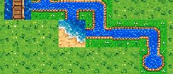
No generated OpeningWorldV1 art for this layer yet. Existing assets and pending replacements are listed below.
Existing masks/frames encode river connectivity; new river-edge components planned under WorldComponentsV1; not game-integrated.
Existing/frozen asset paths
Assets/Art/Production/RemasterExpansion/world-tiles/river-expansion02/river-source.png
Assets/Art/Production/RemasterExpansion/world-tiles/river-expansion02/river-ns.png
Assets/Art/Production/RemasterExpansion/world-tiles/river-expansion02/river-ew.png
Assets/Art/Production/RemasterExpansion/world-tiles/river-expansion02/river-bend-ne.png
Assets/Art/Production/RemasterExpansion/world-tiles/river-expansion02/river-bend-se.png
Assets/Art/Production/RemasterExpansion/world-tiles/river-expansion02/river-bend-sw.png
Assets/Art/Production/RemasterExpansion/world-tiles/river-expansion02/river-bend-nw.png
Assets/Art/Production/RemasterExpansion/world-tiles/river-expansion02/river-t-n.png
Assets/Art/Production/RemasterExpansion/world-tiles/river-expansion02/river-t-e.png
Assets/Art/Production/RemasterExpansion/world-tiles/river-expansion02/river-t-s.png
Assets/Art/Production/RemasterExpansion/world-tiles/river-expansion02/river-t-w.png
Assets/Art/Production/RemasterExpansion/world-tiles/river-expansion02/river-cross.png PR rivers are narrow, winding blue channels with a thin green/brown bank and fine white highlights. The current capture shows a more tile-stepped blue stream with brown/orange borders; compare river width, bank continuity, and bends.
Recommended stable asset contract
world-river-channel-32 · water/river + bank/shore
Size: 32x32 center, straight N/E/S/W, four bends, four tees, cross and mouth tiles
Edge ports / anchors: N/E/S/W water ports; bank overlay follows all exposed land edges
Gap: Provide every connectivity shape and keep water and bank as independently replaceable layers.
River bridge
Pixel Remaster crop · source-frames/pr-altair-to-gatrea-02.png · x=280, y=225, 70×70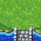
Current BEFORE crop · x=300, y=88, 82×58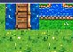
No generated OpeningWorldV1 art for this layer yet. Existing assets and pending replacements are listed below.
Existing tiles are wood; PR reference shows gray stone. New stone bridge assets planned under WorldComponentsV1.
Existing/frozen asset paths
Assets/Art/Production/RemasterExpansion/tiles/coast/bridge-horizontal.png
Assets/Art/Production/RemasterExpansion/tiles/coast/bridge-vertical.png The PR crossing reads as a narrow gray stone span with a clear road deck and squared abutments. The existing AI-Art coast bridge candidates are wooden blue-plank tiles, so they should not be described as stone or assumed visually equivalent.
Recommended stable asset contract
world-bridge-stone-ns-32 / world-bridge-stone-ew-32 · bridge/deck + abutments
Size: 32x32 directional tile pair; 32x64 variant only if one-tile depth is insufficient
Edge ports / anchors: road ports at both bridge ends; river remains continuous under span; shore abutment ports on both banks
Gap: Generate a gray stone bridge pair and keep its deck separate from river and bank layers.
Walled settlement marker
Pixel Remaster crop · source-frames/pr-gatrea-to-fynn-05.png · x=335, y=0, 140×205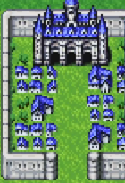
No matching settlement visible in current BEFORE viewportNot visible in supplied current viewport
Candidate · altair-town.png · not integrated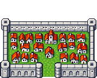
Candidate · fynn-town.png · not integrated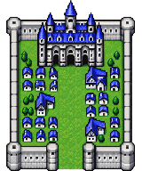
Generated OpeningWorldV1 candidates; not game-integrated.
Existing/frozen asset paths
None recorded. The PR Fynn map marker is a walled cluster of blue-roof buildings with an interior keep, not a lone house. The crop avoids most of the top-right minimap overlay. No walled settlement is visible in the supplied current BEFORE viewport, so this is a target-shape comparison only.
Recommended stable asset contract
OpeningWorldV1 Altair town 5x4 / Fynn town 5x6 · settlement wall + roof clusters + keep + gate
Size: Altair 160x128 (5x4 32px tiles); Fynn 160x192 (5x6)
Edge ports / anchors: bottom-center anchor immediately above the gate cell; wall perimeter has a south gate opening
Gap: Candidate Altair 160x128 and Fynn 160x192 walled markers are available; align a bottom-center anchor above the gate. Art is not integrated into the game.
Overworld actor
Pixel Remaster crop · source-frames/pr-altair-to-gatrea-03.png · x=292, y=132, 48×62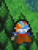
Current BEFORE crop · x=485, y=285, 62×68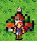
No generated OpeningWorldV1 art for this layer yet. Existing assets and pending replacements are listed below.
Existing directional actor sheets; screenshot comparison is visual only.
Existing/frozen asset paths
Assets/Art/Production/RemasterExpansion/field/firion/down-01.png
Assets/Art/Production/RemasterExpansion/field/firion/left-01.png
Assets/Art/Production/RemasterExpansion/field/firion/right-01.png
Assets/Art/Production/RemasterExpansion/field/firion/up-01.png The PR overworld places a small party-leader sprite over terrain; the supplied current screenshot shows a visibly larger clustered avatar. Keep actor size/readability independent of land tiles, forest canopy, and UI.
Recommended stable asset contract
world-actor-party-leader-16x24-4dir · actor/sprite
Size: 16x24 per frame; 4 directions x idle/walk frames
Edge ports / anchors: bottom-center foot anchor; no terrain edge ports
Gap: Use a compact leader/party marker and preserve a separate foot anchor and animation sheet.
Screen-space map UI
Pixel Remaster crop · source-frames/pr-altair-to-gatrea-02.png · x=474, y=15, 153×140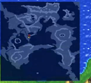
Current BEFORE crop · x=8, y=45, 1000×48No generated OpeningWorldV1 art for this layer yet. Existing assets and pending replacements are listed below.
No new candidate art yet.
Existing/frozen asset paths
None recorded. The PR route captures include a top-right world-map inset. The current game has top objective/title/menu bars and a bottom control bar. These belong to screen-space UI, not the world terrain layer stack.
Recommended stable asset contract
world-ui-minimap-panel · screen-space/minimap + HUD
Size: layout-sized UI panel; not a terrain tile
Edge ports / anchors: anchors to viewport corners; independent of camera/world coordinates
Gap: Keep minimap and objective/control chrome outside all ground, coast, water, settlement, and actor passes.